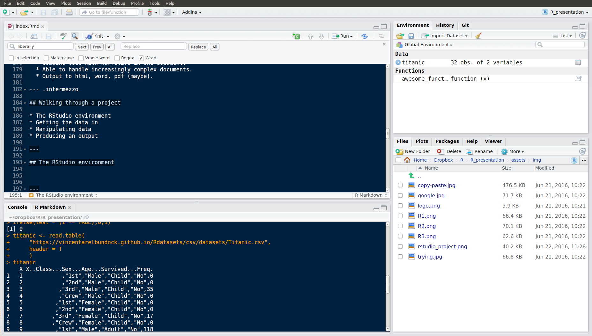

Before we start...
I can't teach you much in an hour...
This session focusses on:
- Some high level advice you might not hear elsewhere.
- A very simple walthrough.
- Some advice for the future and where to get help.
Matthew Upson PhD
Data Scientist
I can't teach you much in an hour...
This session focusses on:
# CRAN 'vetted' packages
install.packages("dplyr")
library(dplyr)
# Packages on github
devtools::install_github("ivyleavedtoadflax/govstyle")
# or in DfE: download the zip
devtools::install_local("C://govstyle-master.zip")
(Some important things you may have never thought about)
Use RStudio projects instead.
setwd() - required for advanced functionality.
The simplest way: record system info for each project.
.libPaths()
## [1] "/home/matthew/R/x86_64-pc-linux-gnu-library/3.3"
## [2] "/usr/local/lib/R/site-library"
## [3] "/usr/lib/R/site-library"
## [4] "/usr/lib/R/library"
# Which exact packages are used?
sessionInfo()
## R version 3.3.0 (2016-05-03)
## Platform: x86_64-pc-linux-gnu (64-bit)
## Running under: Ubuntu 14.04.4 LTS
##
## locale:
## [1] LC_CTYPE=en_GB.UTF-8 LC_NUMERIC=C
## [3] LC_TIME=en_GB.UTF-8 LC_COLLATE=en_GB.UTF-8
## [5] LC_MONETARY=en_GB.UTF-8 LC_MESSAGES=en_GB.UTF-8
## [7] LC_PAPER=en_GB.UTF-8 LC_NAME=C
## [9] LC_ADDRESS=C LC_TELEPHONE=C
## [11] LC_MEASUREMENT=en_GB.UTF-8 LC_IDENTIFICATION=C
##
## attached base packages:
## [1] stats graphics grDevices utils datasets methods base
##
## other attached packages:
## [1] dplyr_0.4.3
##
## loaded via a namespace (and not attached):
## [1] Rcpp_0.12.5 codetools_0.2-14 digest_0.6.9 assertthat_0.1
## [5] R6_2.1.2 DBI_0.4-1 formatR_1.4 magrittr_1.5
## [9] evaluate_0.9 stringi_1.1.1 whisker_0.3-2 tools_3.3.0
## [13] stringr_1.0.0 markdown_0.7.7 yaml_2.1.13 parallel_3.3.0
## [17] slidify_0.5 knitr_1.13.1
A better system for handling dependencies (in most cases).
# Install and load the checkpoint library
install.packages("checkpoint")
library(checkpoint)
# Set a checkpoint for the project
checkpoint("2016-05-22", use.knitr = TRUE)
# Subsequently, you can load this snapshot with:
setSnapshot("2016-05-22")
Some packages will need to be installed manually. Watch your disk space!
The Past is a foreign country, they do things differently there
hard_to_read <- function(x) ifelse(x == 0, NA, x)
# Comment liberally.# Function to replace zero values with NA
better <- function(x) {
ifelse(x == 0, NA, x)
}
# Function to replace zero values with NA
best <- function(x) {
ifelse(
test = (x == 0),
yes = NA,
no = x)
}
Note that some of the code in this presentation is not as clear as this so that it fits on a single slide!

# Assign an object to the name foo
foo <- rnorm(100)
# See which objects are in my environment
ls()
## [1] "encoding" "foo" "inputFile"
filter() exists in package stats (loaded by default) and dplyr which you must load manually.dplyr::filter() to explicitly call the one of interest.Data can come from pretty much anywhere:
Set up data connection in windows.
# Install and load RODBC
install.packages("RODBC")
library(RODBC)
# Set up a connection to the server
conn <- odbcDriverConnect(
'driver={SQL Server};server=3DCPRI-PDB16;database=SWFC_Project;trusted_connection=true'
)
# Get list of tables
sqlTables(conn, tableType = "TABLE")
# Execute query
sqlQuery(conn, "SELECT TOP 10 * FROM TABLE;")
For longer queries: better to keep the files in a separate .sql file, and load them into R as required.
read_sql <- function(sql_file_path) {
# Check whether the sql file exists
stopifnot(file.exists(sql_file_path))
# Read the sql file
sql <- readChar(sql_file_path, nchar = file.info(path)$size)
# Return the query text
return(sql)
}
# Now pass a query to RODBC::sqlQuery
sqlQuery(
conn,
read_sql("C:\\query.sql")
)
library(readr)
# Load data from local csv file
lalonde <- read_csv("lalonde.csv")
Info about this data http://users.nber.org/~rdehejia/data/nswdata2.html
First look at the data
# Because I used readr::read_csv this is a tbl_df object
lalonde
## Source: local data frame [445 x 12]
##
## age educ black hisp married nodegr re74 re75 re78 u74 u75
## (int) (int) (int) (int) (int) (int) (dbl) (dbl) (dbl) (int) (int)
## 1 37 11 1 0 1 1 0 0 9930.05 1 1
## 2 22 9 0 1 0 1 0 0 3595.89 1 1
## 3 30 12 1 0 0 0 0 0 24909.50 1 1
## 4 27 11 1 0 0 1 0 0 7506.15 1 1
## 5 33 8 1 0 0 1 0 0 289.79 1 1
## 6 22 9 1 0 0 1 0 0 4056.49 1 1
## 7 23 12 1 0 0 0 0 0 0.00 1 1
## 8 32 11 1 0 0 1 0 0 8472.16 1 1
## 9 22 16 1 0 0 0 0 0 2164.02 1 1
## 10 33 12 0 0 1 0 0 0 12418.10 1 1
## .. ... ... ... ... ... ... ... ... ... ... ...
## Variables not shown: treat (int)
Preparing the data
# Change dummy variables to factors: the slow way!
lalonde[,"black"] <- factor(lalonde[,"black"])
lalonde[,"hisp"] <- factor(lalonde[,"hisp"])
lalonde[,"married"] <- factor(lalonde[,"married"])
lalonde[,"nodegr"] <- factor(lalonde[,"nodegr"])
lalonde[,"treat"] <- factor(lalonde[,"treat"])
lalonde[,"nodegr"] <- factor(lalonde[,"nodegr"])
Preparing the data
library(dplyr)
# A quicker way using the pipe (%>%)
lalonde <- lalonde %>%
# Use the lalonde dataset
mutate_each(
# Apply the following listed functions to...
funs = funs(factor),
# The following factors...
black, hisp, married, nodegr, treat
)
Preparing the data
levels(lalonde$black)
## [1] "0" "1"
lalonde
## Source: local data frame [445 x 12]
##
## age educ black hisp married nodegr re74 re75 re78 u74
## (int) (int) (fctr) (fctr) (fctr) (fctr) (dbl) (dbl) (dbl) (int)
## 1 37 11 1 0 1 1 0 0 9930.05 1
## 2 22 9 0 1 0 1 0 0 3595.89 1
## 3 30 12 1 0 0 0 0 0 24909.50 1
## 4 27 11 1 0 0 1 0 0 7506.15 1
## 5 33 8 1 0 0 1 0 0 289.79 1
## 6 22 9 1 0 0 1 0 0 4056.49 1
## 7 23 12 1 0 0 0 0 0 0.00 1
## 8 32 11 1 0 0 1 0 0 8472.16 1
## 9 22 16 1 0 0 0 0 0 2164.02 1
## 10 33 12 0 0 1 0 0 0 12418.10 1
## .. ... ... ... ... ... ... ... ... ... ...
## Variables not shown: u75 (int), treat (fctr)
The pipe (%>%) from package dplyr
rnorm(10, mean = 10)
## [1] 9.738485 11.233118 11.040858 10.021327 9.816289 8.780478 10.160161
## [8] 9.611114 10.411079 7.865035
# The pipe passes output from one function to another
rnorm(10, mean = 10) %>% mean %>% round(2)
## [1] 10.25
# In old money, this is:
round(mean(rnorm(10, mean = 10)), 2)
## [1] 10.17
A simple aggregation
# SELECT AVG(re78) FROM lalonde GROUP BY educ
re78_agg <- lalonde %>%
# Equivalent to GROUP BY in sql
group_by(educ) %>%
# equivalent to AVG(re78) in sql
summarise(
re78 = mean(re78)
)
re78_agg
A simple aggregation
## Source: local data frame [14 x 2]
##
## educ re78
## (int) (dbl)
## 1 3 5843.800
## 2 4 5172.575
## 3 5 5383.200
## 4 6 1976.970
## 5 7 2910.147
## 6 8 3767.879
## 7 9 5850.919
## 8 10 4827.663
## 9 11 5119.780
## 10 12 5744.598
## 11 13 7249.487
## 12 14 15200.663
## 13 15 9598.540
## 14 16 2164.020
Linear regression
# Regression real earnings in 1978 against years of education
re78_model <- lm(re78 ~ educ, data = lalonde)
# Get coefficients
re78_model
##
## Call:
## lm(formula = re78 ~ educ, data = lalonde)
##
## Coefficients:
## (Intercept) educ
## 918.2 429.9
Linear regression
attributes(re78_model)
## $names
## [1] "coefficients" "residuals" "effects" "rank"
## [5] "fitted.values" "assign" "qr" "df.residual"
## [9] "xlevels" "call" "terms" "model"
##
## $class
## [1] "lm"
# Can now call these 'slots' with $
re78_model$call
## lm(formula = re78 ~ educ, data = lalonde)
Get a more complete summary
summary(re78_model)
##
## Call:
## lm(formula = re78 ~ educ, data = lalonde)
##
## Residuals:
## Min 1Q Median 3Q Max
## -6506 -5097 -1465 3253 54661
##
## Coefficients:
## Estimate Std. Error t value Pr(>|t|)
## (Intercept) 918.2 1807.6 0.508 0.6117
## educ 429.9 174.6 2.462 0.0142 *
## ---
## Signif. codes: 0 '***' 0.001 '**' 0.01 '*' 0.05 '.' 0.1 ' ' 1
##
## Residual standard error: 6594 on 443 degrees of freedom
## Multiple R-squared: 0.01349, Adjusted R-squared: 0.01127
## F-statistic: 6.06 on 1 and 443 DF, p-value: 0.01421
Simple plots
plot(
x = re78_agg$educ,
y = re78_agg$re78,
xlab = "Years of education",
ylab = "Real earnings in 1978 ($)"
)
Simple plots

Intermediate plotting with ggplot2
library(ggplot2)
lalonde %>%
# Start with lalonde dataset, pass this to a plot function
ggplot +
# Set aesthetic for the whole plot
aes(
x = educ,
y = re78
) +
# Add a layer to the plot
geom_jitter(aes(col = nodegr)) +
geom_smooth(method ="lm", se = FALSE) +
xlab("Years of education") +
ylab("Real earnings in 1978 ($)")
Intermediate plotting with ggplot2

A more gov.uk friendly style
library(ggplot2)
library(govstyle)
re78_agg %>%
ggplot +
aes(
x = educ,
y = re78
) +
geom_bar(
stat = "identity",
fill = unname(gov_cols["turquoise"])
) +
xlab("Years of education") +
ylab("Real earnings in 1978 ($)") +
theme_gov() +
theme(
legend.position = "right",
legend.key = element_blank()
)
A more gov.uk friendly style

?lm().# Function to replace zero values with NA
best <- function(x) {
ifelse(
test = (x == 0),
yes = NA,
no = x)
}
library(testthat)
# Check that the output we get matches our expectation
expect_identical(
# our function replaces zeros with NA - so our first argument we ask our
# function to do this
best(c(0,1,2,3,4,5,0)),
# In the second argument, we give what we expect - the same vector, but with
# zeros converted to NAs
c(NA,1,2,3,4,5,NA)
)